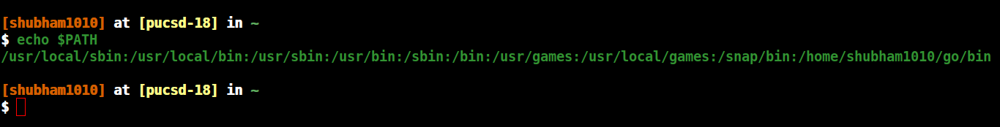
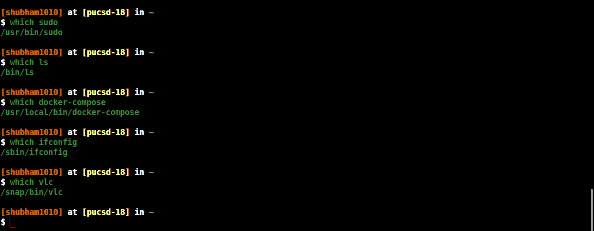

PATH- The Environmental Variable in Linux
This article about the $PATH- The environment varible in linux.
Many time when you type commands in terminal like sudo, ls, cd, cat etc. Have you ever thought How does it know where to find that binary? How they get searched? Where those are located? This blog covers all those answer.
Answers to all those question is $PATH, $PATH is an environmental variable. If you type echo $PATH you will see result as similler to below picture:

You can see that it's a colon seperated listing of directories, these are the directories and in this order bash is going to go through and check each one to see if this has a command which is executed, so it start checking from left to right and get stop after found in any of those directory it's going to return that and execute it. You can check path of each command where it is located by using "which" command.

For Appending type => PATH=$PATH:/dir/name
For Prepending type => PATH=$PATH:/dir/name
But when you logged out everything you set will going back to its original state because we didn't exporting the PATH. The place you hard code something like this is in ~/.bash_profile file. I have exported the PATH for golang binaries you can see how is appended: